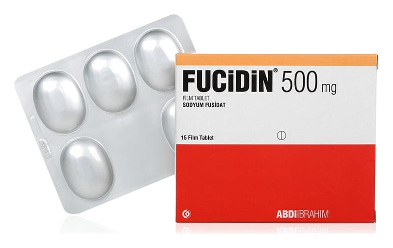

Fucidin 500 mg Film Kaplı Tablet, 30 Adet

Ne için kullanılır
KT · Bölüm 1FUCİDİN, 15, 21 veya 30 tabletlik ambalajlarda kullanıma sunulan bir antibiyotiktir. FUCİDİN, etkin madde olarak sodyum fusidat içerir. Sodyum fusidat, bakterilerin çoğalmasını önleyici veya öldürücü etki gösterir.
Bu ilacı kullanmaya başlamadan önce bu KULLANMA TALİMATINI dikkatlice okuyunuz, çünkü sizin için önemli bilgiler içermektedir. •Bu kullanma talimatını saklayınız. Daha sonra tekrar okumaya ihtiyaç duyabilirsiniz. •Eğer ilave sorularınız olursa, lütfen doktorunuza veya eczacınıza danışınız. •Bu ilaç kişisel olarak sizin için reçete edilmiştir, başkalarına vermeyiniz. •Bu ilacın kullanımı sırasında, doktora veya hastaneye gittiğinizde doktorunuza bu ilacı kullandığınızı söyleyiniz. •Bu talimatta yazılanlara aynen uyunuz. İlaç hakkında size önerilen dozun dışında yüksek veya düşük doz kullanmayınız
FUCİDİN tablet, • Deri ve yumuşak doku enfeksiyonları, • Yara enfeksiyonları, • Septisemi (bakterilerin kana geçmesi sonucunda ateş ve titremeye neden olan hastalık) • Kemik ve kalp dokusu enfeksiyonları • Akciğer enfeksiyonu (pnömoni) • Kistik fibroz (akciğer, böbrek veya pankreasta bozukluğa neden olan kalıtımsal bir hastalık) ile ilişkili enfeksiyonlar, • Antibiyotik kullanımına bağlı ishalin geliştiği infeksiyonların tedavisinde kullanılır.